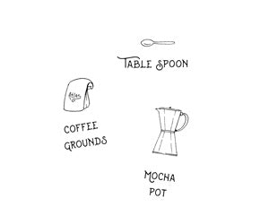

ESPRESSO
Espresso history
 Espresso is a full-flavored, concentrated form of coffee that is served in “shots.”
It is made by forcing pressurized hot water through very finely ground coffee beans using an espresso machine.
The result is a liquid stronger than coffee topped with a “crema,”
a brown foam that forms when air bubbles combine with the soluble oils of fine-ground coffee and
sits on top of a properly pulled shot of espresso.
The crema adds to the rich flavor and lingering aftertaste of espresso.
Espresso is a full-flavored, concentrated form of coffee that is served in “shots.”
It is made by forcing pressurized hot water through very finely ground coffee beans using an espresso machine.
The result is a liquid stronger than coffee topped with a “crema,”
a brown foam that forms when air bubbles combine with the soluble oils of fine-ground coffee and
sits on top of a properly pulled shot of espresso.
The crema adds to the rich flavor and lingering aftertaste of espresso.
Espresso is made using the exact same plant as coffee, and is grown, processed, and roasted the same way.
Any origin and roast coffee can be used to make espresso.
The difference between coffee and espresso is in the grind and the treatment of the beans.
The beans are ground to a finer consistency than coffee and firmly packed before hot water is forced through using an espresso machine.
This results in a shot of espresso, which can be enjoyed as-is or used to make a long list of drinks including a cappuccino or Americano.
Espresso has all of the same flavors of coffee but amplified—bitter, lightly sweet, acidic, toasty.
The exact flavor profile will vary depending on the coffee roast. It has a thicker, creamier texture than coffee.
Espresso is a concentrated form of coffee served in small, strong shots and is the base for many coffee drinks. It's made from the same beans as coffee but is stronger, thicker, and higher in caffeine.
However, because espresso is typically served in smaller servings than coffee, it has less caffeine per serving.
Ingredients

- Nearly boiling water
- Ground coffee beans
Espresso making
To make espresso without an espresso maker:
- Method 1:THE AEROPRESS
- Method 2: THE MOKA POT
- Method 3: THE FRENCH PRESS
The Aeropress
What you will need
- Aeropress
- high quality coffee beans
- tablespoon or scale
- grinder
Aeropress Making

- Stack your AeroPress. Place a filter inside the drain cap—if you can,
use more than one to slow the flow of water when pressing. Lightly rinse the filter and place the drain cap and filter inside the compartment of the press.
Place the press on a stable cup or mug.
- Prepare about 2 tablespoons of coffee by grinding the beans to a fine, table salt-like consistency. Drop them into the filter.
Note that adding more coffee than normal during these makeshift brewing sessions might work in your favor—it will create a more reliably concentrated shot
- Add approximately 3 ½ fluid ounces of water, heated to about 200 degrees. Stir with the coffee. Then, press down on the plunger—hard. Remember, espresso depends on pressure! Transfer your espresso
into a demitasse and enjoy!
The Moka pot
what you will need

- Moka pot
- high quality coffee beans
- tablespoon or scale
Moka pot making

- Measure out about 2 tablespoons of coffee(or any high-quality coffee beans), or 20-22 grams.
Grind your beans as finely as possible.
- Pour 3 ½ fluid ounces of water into the bottom of the pot. Pour the coffee grounds into the built-in filter, shaking to settle the grounds.
Screw on the spouted top of the moka pot tightly and place the pot on a burner set to medium heat.
- The rest of this process is a lot like listening for a tea kettle to whistle.
Wait until the coffee begins to expand and foam in the upper level of the pot—the hot water will create the pressure needed to produce a concentrated coffee, as well as a bit of foam.
When the top is filled with coffee, pour into a demitasse and enjoy!
The French Press
what you will need
- French press
- high quality coffee beans
- tablespoon or scale
- kettle
French press making

- Grind at least two tablespoons of atlas coffee on a fine setting. You’ll need more coffee than you might think to add some richness to the brew,
since it won’t come out as frothy as with a Moka pot or AeroPress.
- In your kettle, heat 1 cup of water to just below 200 degrees. Meanwhile, add the coffee grounds to the French press.
- Bloom your coffee—that is, release the flavor notes of your particular beans—by adding a splash of hot water.
Let the grounds soak for about 30 seconds.
- Pour the rest of the water over the grounds. Close the lid and allow the coffee to steep for about 4 minutes.
- Press the plunger down halfway using slow, steady pressure. Raise it all the way to the top and then plunge all the way down using the same even pressure.
Pour into your favorite mug and enjoy!